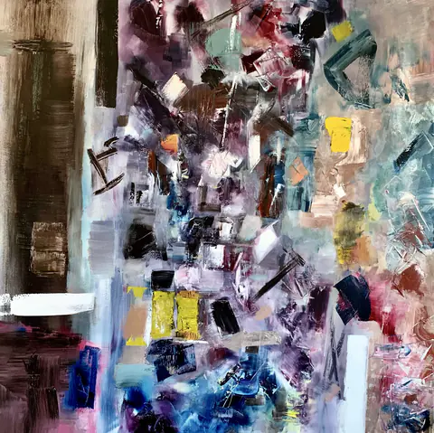
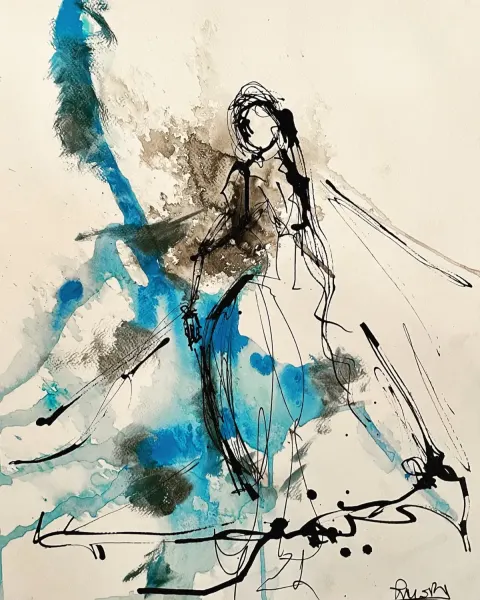
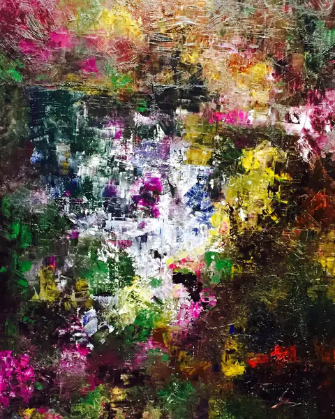
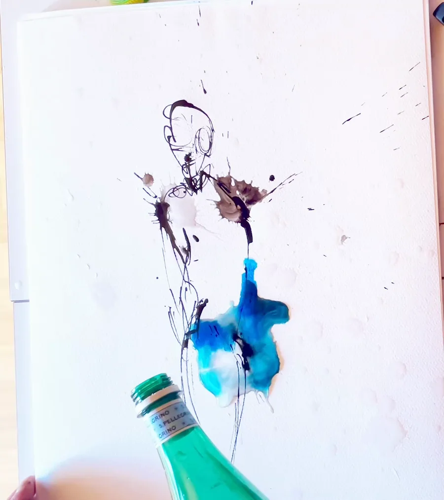

Notes éparses d’un peintre
Peindre.Garder des traces.
La peinture, c’est quelque chose qui ne ment jamais.
Entrer hors cadre
Une encre bleue en très gros plan, animée numériquement à partir d’un dessin de Camilo Rivera. Film silencieux.
06 / Une nouvelle page du journal
Hors
cadre.
Avant un tableau, il y a une vie. Des visages, des lieux, des taches sur la peau. Et des images qui restent.
Ouvrir ces pages01 / Le journal
Il y a les œuvres.
Et tout autour.
Des carnets ouverts, des lieux traversés, des morceaux de vie.


 Et ce qui déborde.73 fragments dans la réserve ↗
Et ce qui déborde.73 fragments dans la réserve ↗Entre deux gestes
La tête ailleurs.
Les mains dedans.
Ce qui se renverse sur la table finit parfois sur le papier.
Dans les plis de l’atelier
 laisser faire
laisser faire02La collection
Ce que le geste
laisse derrière lui.
La matière, le trait, le silence.
Chaque œuvre, une autre façon
de regarder.
{kind=link}

{kind=link}

{kind=link}

La collection complète n’a pas pu être chargée. Ces premières œuvres restent accessibles.
Dans l’intimité du geste
Tout commencepar un geste.
L’encre se pose. La figure apparaît.
Tourner les pages du carnet
Vu du dessus, le dessin d’une figure au trait, puis des encres bleues et violettes qui se diffusent sur le papier. Le film se termine sur l’œuvre. Vidéo sans son.
03Derrière les œuvres

Peindre.
Tracer.
Construire.
Né au Chili. Grandi en Valais.
Et toujours, ce besoin de créer.
Je peins depuis une dizaine d’années. L’huile d’abord : la matière, le geste, l’abstraction. Puis l’encre de Chine, et avec elle la figure. Un trait plus nu, plus direct.
Ce même élan me conduit à imaginer des sites et des applications chez OSOM Labs, l’agence que j’ai fondée à Bramois. De la toile au code, partir de rien et construire quelque chose qui tient.
L’autre côté du geste : OSOM Labs{kind=link}
{kind=link}
04La conversation continue
Une question sur une œuvre, une collaboration,
ou simplement l’envie d’échanger.